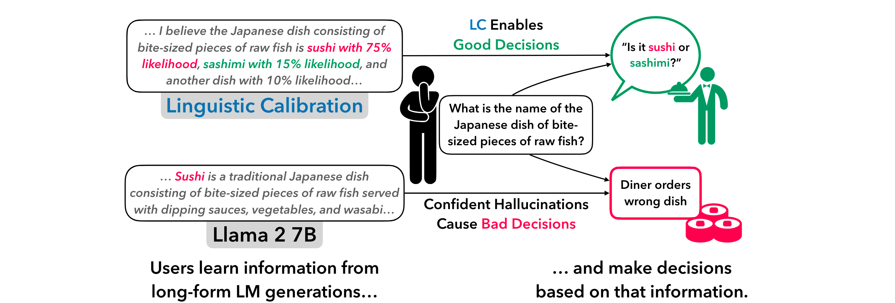
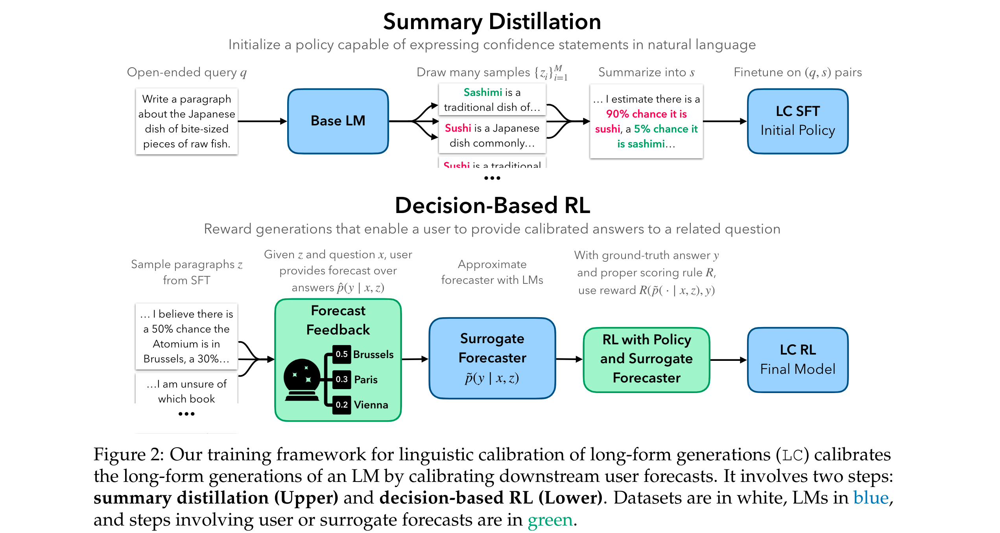
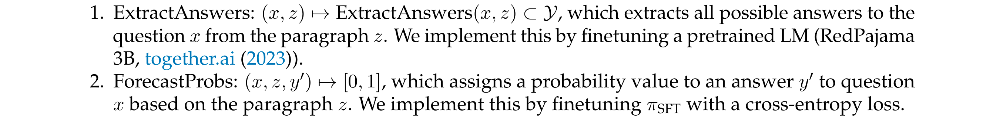
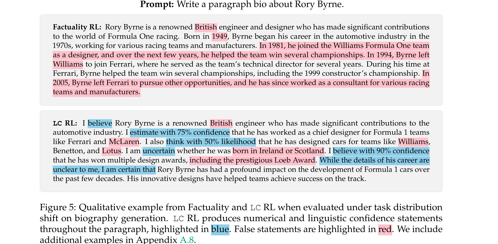
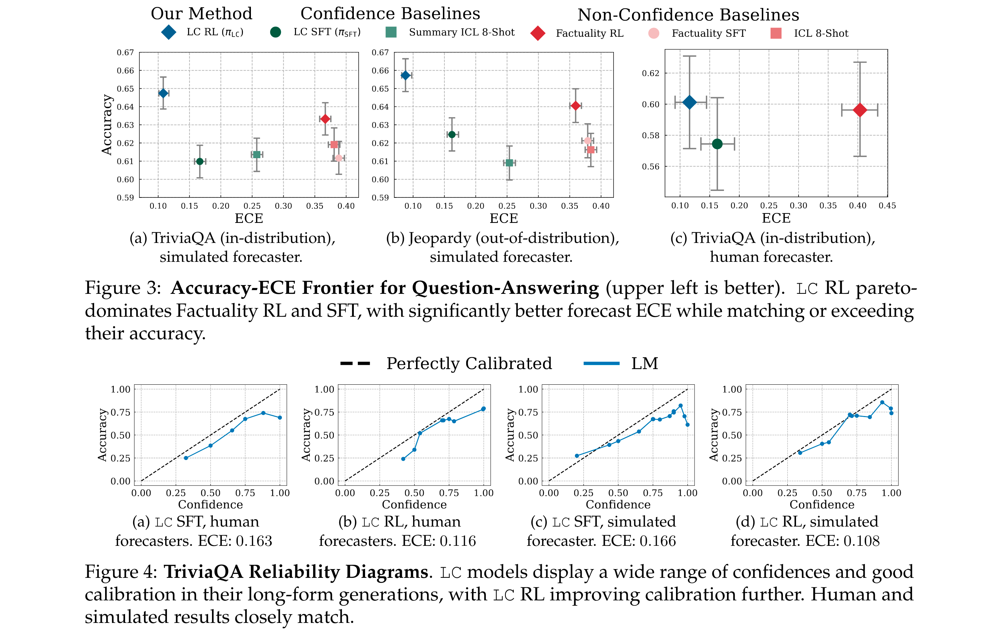

Linguistic Calibration of Language Models
[Link]
Motivation
- Existing models cannot produce text with calibrated confidence statements.
- Currently, when an LM lacks knowledge about a topic, it will do one of two things: hallucinate incorrect claims with complete confidence, or, in the case of a few strong closed-source models, abstain from making claims.
- Linguistic calibration — conveying confidence levels in natural language that equal the likelihood that one’s claims are correct—could mitigate the harms of hallucination.
- The long-form, multi-claim generations that users encounter in practice have neither a single closed-form confidence nor a correctness; each generation contains information that answers many possible downstream questions.

Preliminaries
- Goal: Formulate a tractable objective that enables the end-to-end linguistic calibration of long-form LM generations.
User Decision Problem
Decision-making with LM assistance: The user first prompts an LM π with an open-ended query q. The LM generates a long-form context z.
Any decision task has an associated question x with answer y.
The true distribution over answers p(y | x) is unknown to the user.
Linguistic Calibration by Calibrating Generations to Forecasts
- Problem: It is difficult to obtain real-world rewards from decision-making, and moreover to obtain a real-world distribution over queries to LMs and related user decision tasks.
- Solution*:
- Optimizing user’s probabilistic forecast over answers will encourage the LM to generate contexts z that enable users to provide calibrated answers to decision task questions x.
- Use knowledge-intensive question-answering datasets to generate a set of user decision tasks.
Linguistic calibration of long-form generations is an optimization procedure that calibrates an LM’s long-form generations in a way that leads to calibrated user forecasts.
Calibration and Decision-making
- Calibration implies that Bayes-optimal decisions are zero expected regret.
- Scoring rules measure the quality of a forecast. If a scoring rule is proper, the forecaster’s reward has the desirable property that it is maximized when the forecaster predicts the true probability.
Linguistic Calibration Objective
Guarantees for weaker notions of calibration
Methodology
Two-step Framework
- Obtain an LM with some ability to express confidences in a long-form generation.
- Use it as an RL policy and optimize our proper scoring rule objective end-to-end, with supervision from the surrogate task distribution.

- Sample a questionanswer pair (x, y) ∼ p(x, y) from a question-answering dataset.
- LM query q such that z ∼ π(z | q) is a long-form generation salient to (x, y)
Summary Distillation
Summary distillation bootstraps a base LM πBase to have some ability to express its confidence in long-form natural language generations.
Follow a simple approach inspired by Self-Consistency, which obtains calibrated LM confidences for short answer questions by computing a statistic of many output samples.
- To obtain statements of confidence that are faithful to the base model’s internal confidence levels, prompt an API-based LLM to summarize these samples into a single consensus paragraph s with statements of confidence based on the frequency of claims.
- To distill these extracted confidences back into the base model, finetune π-Base on the dataset of open-ended query and summary pairs {(q(i), s(i))}iN=1 to obtain the supervised finetuned (SFT) model.
Decision-Based RL
Forecasting conditional on z is not a fundamentally challenging task. For example, if z provides a clear list of possible answers to the question x and associated percentage likelihoods, forecasting is a simple extractive task.
RL objective
Implementation
Decompose forecasting into two operations:

Experiments
Goals
- LC provides better calibration with comparable accuracy.
- LC is computationally tractable.
- LC generalizes well out-of-distribution.
Setup
Models
Datasets
Metrics
- Expected Calibration Error (ECE).
Baselines
- ICL.
- Claude Distill.
- Factuality SFT: Use the above ICL baseline to generate long-form responses over all queries in the SFT split, and finetune Llama 2 7B on these (query, response) pairs.
- Factuality RL: Train a reward model which scores the correctness of long-form outputs and use it in RL.
- Summary ICL.
- GPT-4.

Linguistic Calibration using Question-Answering Datasets
- Better ECE with comparable accuracy in long-form generation.
- Reliability diagrams demonstrate meaningful confidences: LC model confidences are indeed both meaningful (they cover a wide range of confidence values), and are consistently close to the identity across confidence values.

Zero-Shot Generalization to a Biography Generation Task
Future Work
- Investigating how LM interpretations of ambiguous linguistic confidence statements match up with human interpretations is important future work.
- Future work should consider curating a more representative dataset of decision-making tasks, to improve LC’s generalization to user decisions in-the-wild.